Wai-O-Tapu Thermal Reserve
The junction between the Australian and Pacific plates runs diagonally across North Island. This area has been devastating earthquakes, eruptions and lahars. Currently White Island (a marine volcano) is being watched due to earthquake activity (an eruption would cause a tsunami on across the east coast.) You can take a helicopter trip to White Island if you sign a waiver. (There's a special rate for Australians, I was told.)
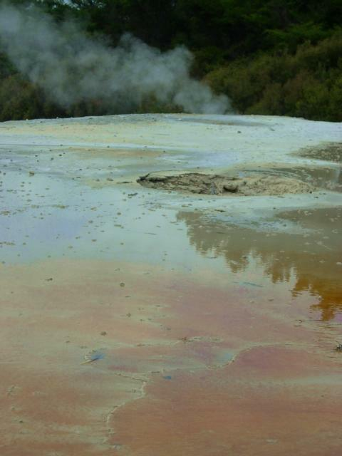
The orange color is due to 12% each arsenic and antimony with trace amounts of silver and gold
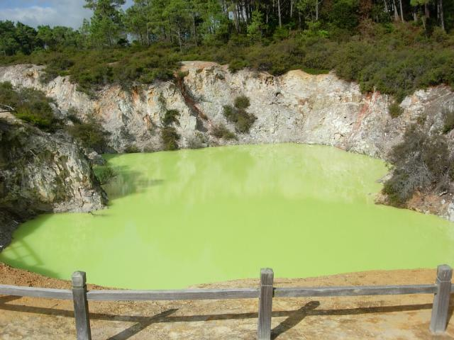
This acidic pool (pH < 1) is colored by sulfur
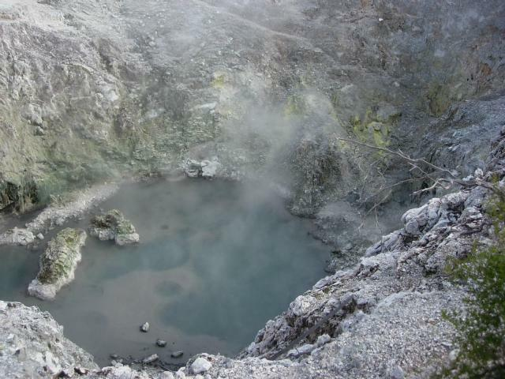
This is an alkaline pool formed by water rising through rock
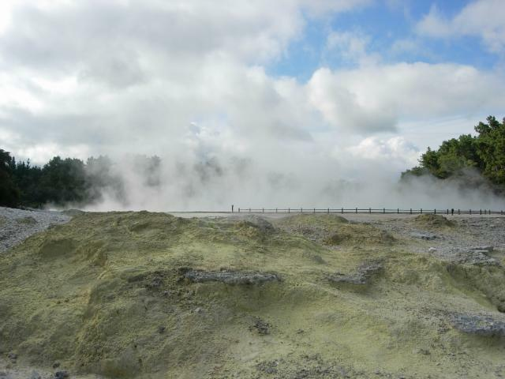
Sulfur and steam
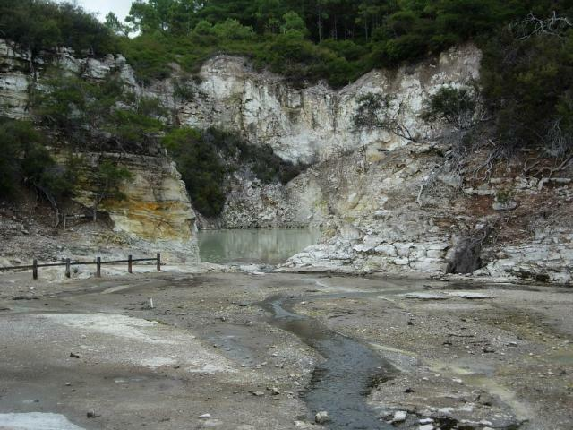
Outflow from geothermal system
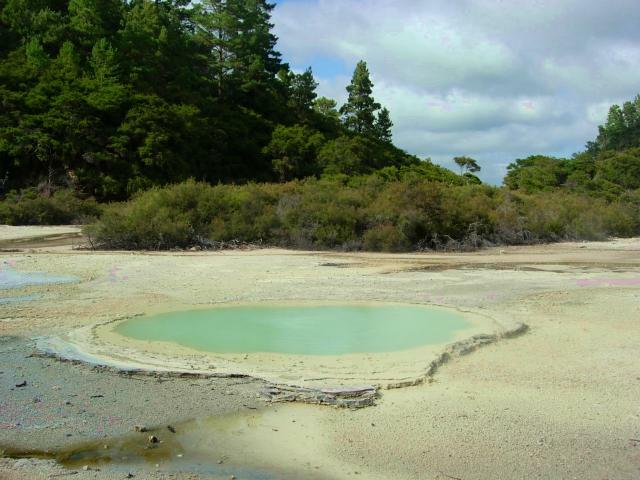
The pool is blue from copper
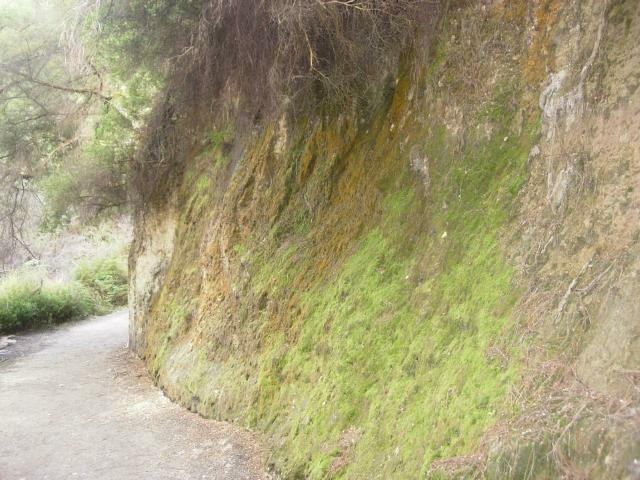
Green and orange lichens
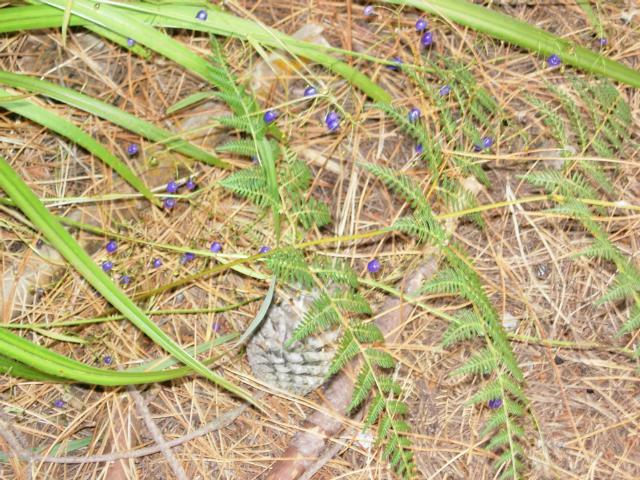
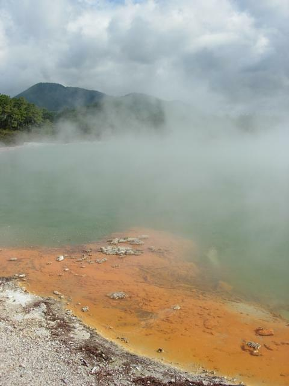
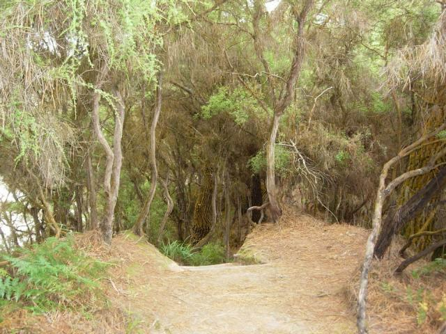
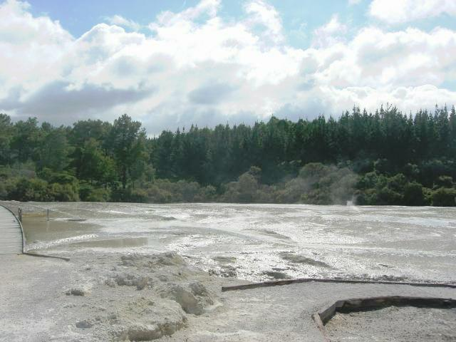
Silicates with a thin layer of water flowing on top